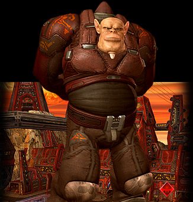
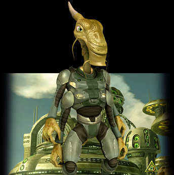
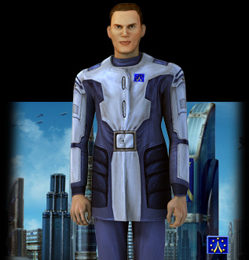
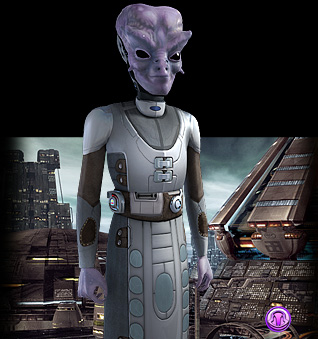
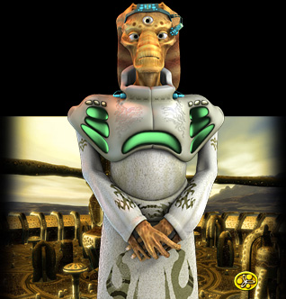
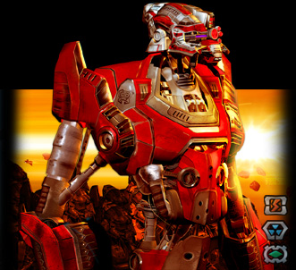

Handbook >
Races
|
Handbook >
Races
|
| Races The game features five races of the Coalition: maloqs, pelengs, people, feyans, gaals, and the invader race - dominators. Below the races are represented by the criteria of the ascending level of the technological progress and the quality of the equipment delivered. From the lowest to the highest!  Maloqs The maloqs are large, strongly built humanoids. Characteristic of immense physical strength, endurance, high resistance to natural factors, not not too active thinking activities, and almost absolute pantophagy. These characteristics allow the maloqs to survive even in the most unfavorable conditions. The maloqs worship power as a cult. Physical and mental strength, the power of word and the power of action, the power of weapon and the power of - oh well - power itself - these are the main and the universal values of the maloq civilization. The maloqs have little liking for the weak feyans and the overly smart gaalians. The maloqs are the most technologically retarded civilization of the Coalition. This can be primarily explained by their traditional distrust towards any intellectual values, which - in their opinion - all too often lead to liberality, which is considered by maloqs to be the main menace to stability. Other factors, slowing down the technological progress of this race, are huge expenses on army and space fleet maintenance. |
|  Pelengs The pelengs are a race of cervix branchiae amphibians, normally referred to as leprases. These creatures can live both live in aquatic environment and on the firm ground, can inhale any gas mixtures, which include a small dose of nitrogen. As any other leprases the pelengs feed off acidic plankton and calloil riff sediments. The pelengs are pirates, saboteurs, and instigators. Though they are formally the members of the Galactic Commonwealth, in reality the pelengs do not maintain any strong economic or diplomatic relations to other races. Direct and quick profit at any cost is the sole goal of any individual Peleng and the entire civilization. The pelengs treat all other races equally bad. Especially those ones who are smarter than them. The Peleng attempts to remove the lag in the technological development in a number of branches resulted in the development of a sophisticated system of industrial espionage. The Peleng Dzukhallag Department is the best espionage and sabotage organization in the entire Commonwealth. |
|  People The humans are mid-height humanoids with a thin and fragile skeleton, feed off organic protein food. The variety of climatic conditions on the majority of the inhabited planets (especially in the Solar system) result in strong differences in appearance: complexion, face features, etc. The humans are primarily psychologists, politicians, and diplomats. Rhetoric, psychological games, and political technologies are the main Human trump-cards. It has historically happened that humans make friends with feyans, when they always disliked maloqs, for they are too aggressive. The relation towards pelengs and gaalians is normal. From the point of view of technology humans are your average Joe. All the main achievements have been made by the humans in the sphere of economics. It was them who many centuries ago founded the galaxy-wide network of trading centers, managing to involve in it even the conservative gaalians and maloqs, which in general despise the trade. However the main achievement of the humans in this field is the introduction of a common currency unit - galaxy credit! Another notable achievement is the introduction of the all-galaxy chronological system based on the one used by the humans. |
|  Feyans The feyans are a race of humanoid-hermaphrodites with an oversized brain and faceted eyes. They are slow-moving, physically weak creatures, which larger part of the activity is aimed at the reflection. A Feyan can voluntarily divide his mind and the faceted eyesight into sectors so that they would function independently. In this way they create a random number of autonomous areas of the consciousness, which perceive the world separately through their part of the faceted eyesight. The feyans are characterized through the highest level of natural intellectual abilities. These are the thinkers, researchers, and innovators, cultivating their own technocratic culture and their own original picture of the world. The feyans have all the respect for the gaalians and keep a slack hand to their Minors - humans. Maloqs for feyans are like animals rather than reasonable beings. pelengs are always infiltrating the feyan territory with the aim to obtain the latest technologies. The feyans enjoy the role of the main leading force in the Commonwealth in the area of research and development in various fields of science and technology. |
|  Gaals Gaals (Children of Gaal) - are humanoids who have spent millennia modifying their biological shape through the genetic modification of embryos. The original natural form of the gaalian race doesn't exist any longer. Currently gaalians are the most developed race of the Commonwealth. The history of their people dates back to times of ancient, when the gaalians were the only intelligent beings of all the races in the Commonwealth. The Gaalians are tycoons, and the driving force of the space, cultivating constructivism and humanism in all relations. They use the military fleet only to neutralize impending conflicts and providing the stability in the Commonwealth. The gaalians treat everyone equally well with no exceptions. It is their idea, that no matter how badly this or that race behaves, potentially they still bear positive tendencies and qualities, and have at least three basic rights: the right to live, the right to determine virtues and the right to motivation. As a result the Gaalians treat everyone as friends and partners, even when the latters are not them. |
|  Dominators Little is known about the Dominators. Actually it is the player who should find out in course of the game, who they are and why they came to this world. It is known that they are divided into three types: blazeroids, kelleroids, and terronoids. The scientists believe that each series of dominators have their own command center, their founder at the same time. It is considered that only an encounter with dominators can help clarify the reason of the invasion of this particular series of dominators into this galaxy. Well, nobody had a chance so far to talk to any of the dominator bosses. The spaceships of the dominators are fearless, they never enter into talks and never beg for mercy. The technologies of dominators are none the worse of the up-to-date technologies of the Commonwealth. The robots have their powerful weapon, unavailable for other forces of the Coalition. The Commonwealth of five races is actively struggling against the dominator troops. All efforts are hurled against the machines. Scientific Bases are conducting the anti-dominator researches. Ranger Centers are collecting nods - parts, which drop down from the destroyed dominator ships (afterwards the nods are used as an origin for micromodules, which in their turn help to enhance the equipment), in addition they hire new rangers - Heroes of Our Time. Finally the Military Bases award the pilots with new ranks and mount operations for the liberation of systems. |
| |